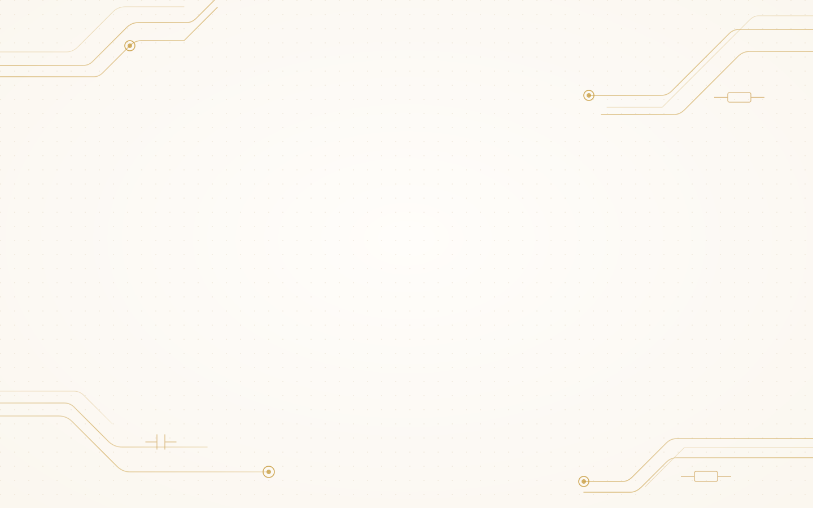

子模块原理图设计
基于设计需求、数据手册与参考资料，完成子模块级原理图设计，并同步给出器件选型与参数依据。
SCHEMATIC01

从需求与数据手册出发，到原理图、网表、评审、机理分析与 PCB 指导，再到 AI 驱动的 EDA 设计开发，由定制 Agent 统一编排并交付可复核的工程结果。
基于设计需求、数据手册与参考资料，完成子模块级原理图设计，并同步给出器件选型与参数依据。
结合硬件知识库，对候选器件逐项比对引脚、电压、时序与封装，输出可追溯的选型与替换评估。
辅助编制设计说明、BOM、检查记录与工程报告，把过程数据与规则校核结果整理为可交付文档。
解析 Cadence OrCAD 原理图网表，还原器件、引脚与网络连接拓扑，为分析与评审提供结构化输入。
依据内置的 110+ 条原理图评审要素逐项检查，输出风险项、证据与整改建议，结果可复核、可追溯。
对复杂电路做快速辅助理解，梳理模块链路、信号流向与电源关系，解释工作原理与设计机理。
面向布局布线、叠层与高速接口给出 PCB 设计建议和指导，覆盖 SI / PI / EMC 等工程关注点。
支持 AI 驱动的 KiCad 等硬件设计 EDA 的设计开发，通过 Skill 与 MCP 工具把设计意图接入工具链。
Skill、硬件知识库、MCP 工具与 EDA 能力保持模块化独立，Agent 负责理解、规划、调度与复查，确定性检查交给程序与工具执行。
自研 OrCAD 原理图网表解析器与规则引擎，把网表、器件、引脚与网络连接解析为结构化数据，是上层能力的确定性输入。
器件手册、设计规范、评审要素与工程案例统一索引，为每条结论提供证据来源。
以标准接口接入 EDA 与规则程序，连通性、参数与规则校验由工具确定性执行。
把原理图设计、网表解析、评审等硬件任务沉淀为可维护、可复用的工程方法与脚本。
由定制 Agent 统一编排，负责任务理解、规划、工具调度与结果复查，是工作台的能力中枢。
支持 AI 驱动的 KiCad 等硬件设计 EDA 的设计开发，让 AI 参与真实设计流程而非停留在问答。